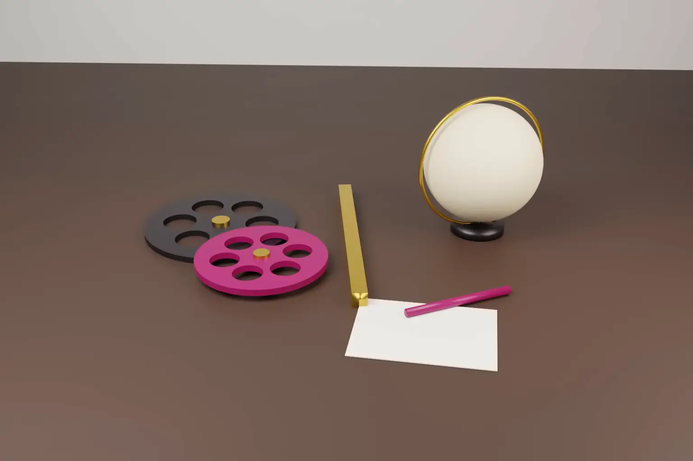

Can an Indian court stop a foreign copyright suit about content made in India? Yes, in a suitable case. On 5 November 2026 the Delhi High Court granted an anti suit injunction in T.V. Today Network v Global Weather Productions. It restrained US claimants from continuing a copyright suit in California over weather footage used in Indian news reports on YouTube.
The order was passed by Justice Tejas Karia in CS(COMM) 738/2026 on an interim application. It is a prima facie view. The suit will be heard further, and the next date is 9 February 2027.
- Until the suit is decided, the defendants may not pursue their US suit in California. They also may not start any other foreign proceeding on the same subject.
- The court found the US suit prima facie vexatious and oppressive. The videos were scripted and uploaded in India for Indian audiences.
- A jurisdiction consent in YouTube's counter notification process was treated as a standard form condition, not a negotiated choice of forum.
- Brief segments of footage within news narration prima facie fall within Section 52(1)(a)(iii) of the Copyright Act, 1957. That is the exception for reporting current events.
- Defendants 1 to 6 were not represented at the hearing and filed no reply. The findings are interim and not a final view on the merits.
The facts
The plaintiff is the broadcaster behind Aaj Tak and India Today Television. Between 2022 and 2025 it published YouTube news reports on weather events abroad. The reports were scripted and uploaded from India.
The defendants are a US company and five US residents who claim rights in weather recordings. Their copyright complaints led YouTube to disable access to some of the videos. On 18 March 2026 they sued in the US District Court for the Northern District of California (Case No. 3:26-cv-02367). They alleged copyright infringement and removal of copyright management information in 42 videos. The US suit was listed for 6 November 2026, the day after the Delhi order.
YouTube was also a defendant in Delhi, but the plaintiff did not press relief against it.
What the court decided
The test. The court applied the Supreme Court's principles in Modi Entertainment Network v W.S.G. Cricket and Oil and Natural Gas Commission v Western Company of North America. It also relied on the Delhi High Court's ruling in HT Media v Brainlink International. Three questions matter. Is the defendant amenable to the Indian court's personal jurisdiction? Would refusing relief defeat the ends of justice? Has comity been given due regard? Where more than one forum is available, the court also asks whether the foreign proceeding is oppressive or vexatious.
Jurisdiction. The court held the defendants prima facie amenable to its jurisdiction. The cause of action arose in India, and the harm from the takedowns was suffered in India.
The YouTube consent clause. The only US link was the use of YouTube and the consent to jurisdiction given in counter notifications. The court called the jurisdiction clause a standard form condition for contesting takedowns, not a negotiated forum choice. In paragraph 11 it said: "It cannot alone shift the forum of a dispute arising entirely from acts in India."
Oppression and vexation. The plaintiff has no US business. The videos were made in India for Indian viewers. Continuing the US suit would subject Indian conduct to foreign law and risk conflicting decisions. The court held the US suit prima facie vexatious and oppressive.
The merits. The court found a prima facie case on fair dealing. It relied on its earlier decision in Associated Broadcasting Company v Google, which treated natural events and current affairs as facts. In paragraph 13 it held: "Brief, segmented extracts within news narration and commentary fall within Section 52(1)(a)(iii) of the Act". It also applied the de minimis principle from India TV v Yashraj Films.
Defendants 1 to 6 are restrained from proceeding with the US suit until the Delhi suit is decided. They also may not file any foreign proceeding on the same subject.
What the court did not decide
- It did not finally decide infringement or fair dealing. Both findings are prima facie, and the defendants have not yet answered.
- It did not restrain YouTube or address YouTube's own policies.
- It did not restrain further copyright notices or takedown requests, although the plaintiff sought that relief.
- It did not say that every YouTube counter notification is ineffective. It held only that the consent could not, by itself, move a dispute that arose entirely in India.
- It cannot bind the US court. The injunction acts on the defendants personally. Whether the California court stays its own case is a matter for that court.
The limits of the news exception matter too. In ANI Media v RSY News (29 September 2026), the same High Court considered a YouTube channel's wholesale reuploads of news videos. It held they were not fair dealing under Section 52(1)(a)(iii). Short clips inside original reporting are treated differently from wholesale copying.
How the US, Europe and the UK compare
United States. The counter notification consent comes from the Digital Millennium Copyright Act. Under 17 U.S.C. § 512(g)(3)(D), an uploader outside the US consents to the jurisdiction of a federal court in any district where the service provider may be found. Under § 512(g)(2)(C), the platform restores the material within 10 to 14 business days unless the complainant gives notice that it has sued. A counter notification is therefore a real step towards US litigation. US courts can also grant anti suit injunctions, but federal circuits differ on how much weight comity receives. On the merits, US law asks whether the use is fair use under 17 U.S.C. § 107, a broader and more flexible test than India's listed fair dealing purposes.
European Union. Within the Brussels regime, courts of one Member State cannot restrain proceedings in another. The Court of Justice so held in Turner v Grovit (C-159/02). EU courts are also wary of foreign anti suit orders aimed at them. Copyright exceptions for news are set by Article 5(3)(c) of the InfoSoc Directive, 2001/29/EC, and national law.
United Kingdom. English courts grant anti suit injunctions where foreign proceedings are vexatious or oppressive. Following Airbus Industrie v Patel [1999] 1 AC 119, England must also have a sufficient interest. Section 30(2) of the Copyright, Designs and Patents Act 1988 allows fair dealing for reporting current events, with a sufficient acknowledgement, but excludes photographs.
The Delhi order fits the common law tradition. It acts on the parties, not the foreign court, and it rests on the finding that Indian courts are the appropriate forum.
Practical steps
- Indian publishers should read the consent wording before filing a YouTube counter notification. It can expose them to a US suit if the complainant sues within the restoration window.
- Indian publishers should keep production records showing where each video was scripted, edited and uploaded. That evidence carried weight here.
- Newsrooms should keep third party footage brief, embedded in original commentary, and credited. Wholesale reuse is unlikely to qualify as reporting current events.
- Rights holders abroad should expect Indian courts to ask which forum is appropriate. Suing in India may be quicker and easier to enforce against an Indian publisher.
- Anyone facing a foreign suit over conduct in India should move quickly. The Delhi court acted the day before the US suit was listed.
We advise publishers, startups and rights holders on copyright clearance, takedown disputes and cross border litigation strategy. See our guide to the types of intellectual property protection and our note on fair use and AI training in Thomson Reuters v Ross.
Frequently asked questions
Can an Indian court stop a copyright case filed in the US?
An Indian court can restrain a party within its jurisdiction from pursuing foreign proceedings that are vexatious or oppressive. In TV Today v Global Weather, the Delhi High Court did so because the videos were made and published in India for Indian viewers.
Does a YouTube counter notification mean consenting to US courts?
The DMCA counter notification includes consent to a US federal court's jurisdiction. The Delhi High Court held prima facie that this standard form consent alone cannot move a dispute arising entirely from acts in India.
Is using short news clips fair dealing in India?
Section 52(1)(a)(iii) of the Copyright Act permits fair dealing for reporting current events. In TV Today, the Delhi High Court held prima facie that brief segments within news narration and commentary qualify. In ANI v RSY News, it held that wholesale reuploads did not.